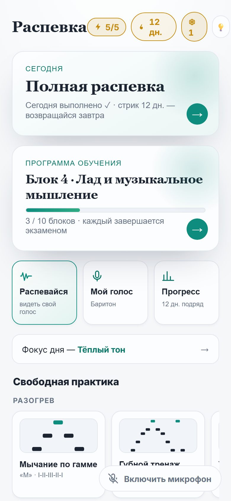
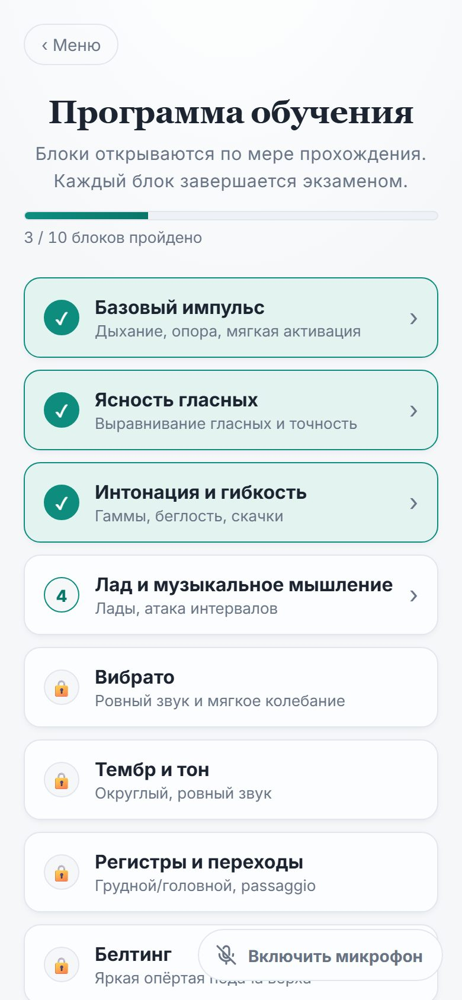
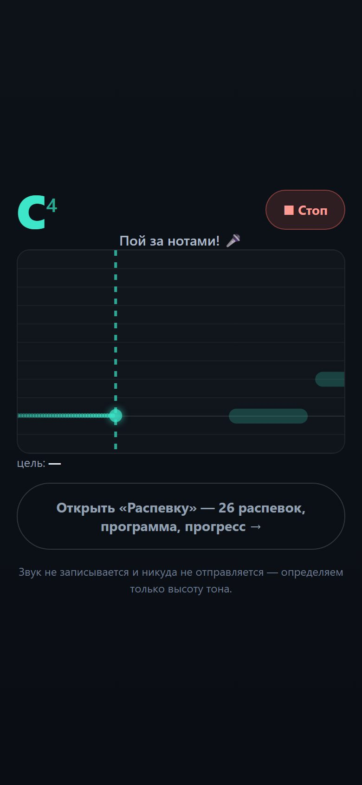
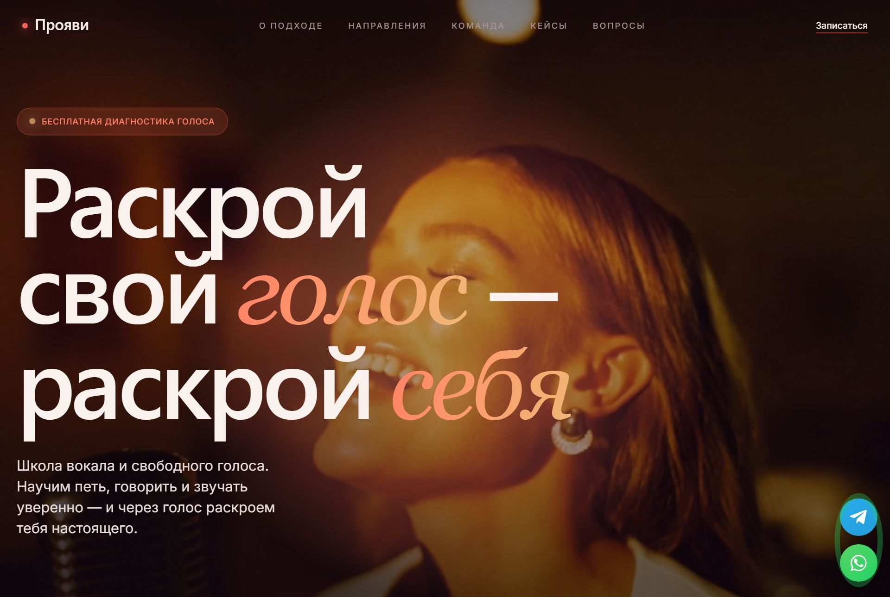
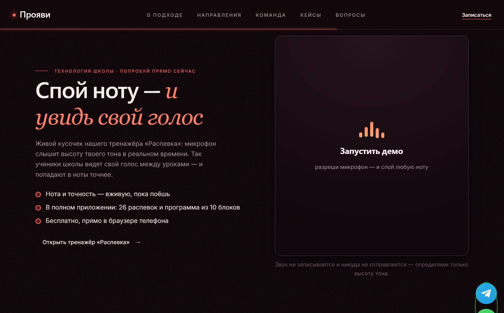

Бесплатный игровой тренажёр голоса + действующее направление живых уроков, соединённые в один денежный маховик. Мы не изобретаем велосипед — мы взяли модель, на которой Simply (JoyTunes) выросла до оценки $1 млрд, сделали её русскоязычной и усилили игрой со связкой «приложение ↔ живой педагог».
Нужно 2 млн ₽ (бо́льшая часть — на маркетинг и рост). Цель — выйти на ≈ $20 000/мес чистой прибыли за 12–18 месяцев. Прогноз построен не «из головы», а на реальных бенчмарках конкурентов и рынка (источники — ниже).
Курс для перевода в этом документе: $1 ≈ 95 ₽ (ориентир, июнь 2026). $20 000 ≈ 1,9 млн ₽ чистыми в месяц.
Индивидуальный урок вокала в РФ — 2 000–3 500 ₽. Высокий порог входа отсекает большинство желающих ещё до первого занятия.
YouTube-уроки не слышат тебя: ты не знаешь, попадаешь ли в ноты, и нет системы — поэтому бросают.
Западные тренажёры без живого наставника и на английском — люди не доходят до результата и отваливаются.
Стоимость лида в онлайн-образовании РФ выросла в 7 раз за 3 года (60 ₽ → ~450 ₽). Школам нужен дешёвый источник «тёплой» аудитории.
Источники: цены уроков — artvocal.ru, voca-beat.ru; рост CAC — vkusnovk.ru, 2024.
Бесплатное приложение собирает и удерживает широкую аудиторию ежедневной привычкой → мягко ведёт к живому педагогу. Живые уроки дают экспертизу и контент → ученики практикуют в приложении между занятиями. Один и тот же трафик и контент работают на оба продукта.
Главный риск любого стартапа — «а нужен ли продукт рынку». Здесь этот риск уже сняли за нас: на модели «игровое обучение музыке/вокалу через приложение» Simply (JoyTunes) дошла до оценки $1 млрд и ~$200M ARR, а Yousician делает ~€53M в год. Мы берём доказанную механику, добавляем игру и то, чего у них нет для нашего рынка: русский язык, методику действующей команды и двустороннюю воронку «приложение ↔ живой педагог». Это снижает рыночный риск и оставляет нам понятный исполнительский.
За проектом — действующее направление живых уроков, которое работает и приносит деньги уже сегодня. «Распевка» — не «идея на проверку», а новый дешёвый канал привлечения к работающей монетизации плюс собственная подписка. Инвестиции идут на масштабирование работающего, а не на «проверку гипотезы».
Действующее направление с педагогами и реальной выручкой — сегодня. Это готовая монетизация, к которой приложение приводит аудиторию.
Развёрнуто, открывается с телефона, реалтайм-питч работает. Можно потрогать по ссылке прямо на встрече с инвестором.
Демо-виджет на сайте + кнопка «к педагогу» с заявкой в Telegram — связка «приложение → живые уроки» уже готова технически.
Ставится на телефон (PWA), слышит высоту голоса в реальном времени, по-игровому считает попадание. Ниже — ключевые экраны (так выглядит в живом приложении по ссылке вверху).
Это реальные скриншоты живого приложения (не макеты) — открой по ссылке и потрогай сам.



по профессиональным нотам, снятым из методических пособий; рисунок мелодии у каждой.
дыхание, гласные, интонация, лад, вибрато, тембр, регистры, белтинг, дикция, сопротивление — с экзаменами.
стрик, заморозка стрика, дневная цель, празднования — механики, которые в Duolingo дают 8% платящих.
Сайт уже работает и связан с приложением: на странице — живой демо-виджет «спой ноту, увидь её», который превращает посетителя в «вау» прямо в браузере.


Готовы к публикации: PWA-установка на телефон, иконки и манифест под Google Play / RuStore / App Store, каркас подписки и 7-дневного триала (выключен до решения о монетизации), демо-виджет для сайта, отправка заявок педагогу в Telegram.
Ниша пуста. Yousician и Simply Sing недоступны качественно на русском, Riyaz — индийская специфика, локальный Vocalex не входит даже в топ-5 Music&Audio РФ. Специализированного русскоязычного геймифицированного вокального тренажёра с реалтайм-питчем и связкой со школой — нет.
Источники: GrowthMarketReports (2024); IMARC Russia EdTech; Smart Ranking (02.2026); GetCourse (2024); Tracxn / Vocalex.
Западные лидеры на русском не работают качественно, локальных сильных нет — кто займёт нишу первым, тот её и удержит.
Реалтайм-питч в браузере на телефоне (PWA) — больше не нужен дорогой нативный стек; быстрый запуск и обновления.
CAC школ вырос 7× — у того, кто строит дешёвый органический канал (вирусное приложение), растёт преимущество каждый месяц.
| Игрок | Что это | Выручка / масштаб | Для нас |
|---|---|---|---|
| Simply (JoyTunes) пианино, гитара, вокал |
Freemium-приложения + подписка ($60–120/год) | ~$200M ARR, оценка $1 млрд (Google Ventures, Qualcomm). Simply Sing — ~$9–11M/год только вокал. оценка Latka / Sensor Tower |
образец модели почти идентичный продукт; доказывает, что на этом строят единорогов |
| Yousician мульти-инструмент + вокал |
Freemium + Premium ($120/год) | ~€53M ARR, 20M+ MAU (с GuitarTuna) Tracxn / реестр Финляндии |
лидер на русском качественно не представлен |
| Smule соц. караоке/дуэты |
Freemium + VIP ($40/год) | ~$44M (оценка), 125M+ регистраций за всё время craft.co / оценка |
смежный развлечение, не обучение — другой сегмент |
| Riyaz вокал, Индия |
Freemium + подписка | 3M+ загрузок, 150K MAU, 25K платящих YourStory |
аналог подтверждает спрос на вокал-тренажёр в нише |
| Распевка | Бесплатное приложение + живые уроки + подписка | Запуск. Продукт готов, выручки пока нет — это и есть точка входа инвестора. | наш ход русский язык + игра + методика команды + воронка app↔педагог; модель де-рискована конкурентами |
Абонемент ~18 000 ₽/мес (8 онлайн-уроков). Маржа после оплаты педагогу — ~53%. Бесплатный пробный урок повышает покупку в ~4 раза.
Подписка 3 990 ₽/год (≈ 332 ₽/мес), freemium: 5 распевок/день бесплатно → подписка. Себестоимость на пользователя близка к нулю.
| Показатель | Значение | Источник |
|---|---|---|
| Конверсия установка → триал (Education) | 10,9% | Adapty Education Benchmarks, 2025 |
| Конверсия триал → платящий (Education) | 25,6% | Adapty, 2025 |
| LTV пользователя за 12 мес (Education) | ~$45 (~4 300 ₽) | Adapty, 2025 |
| Целевая дисциплина LTV : CAC | ≥ 3 : 1 | стандарт юнит-экономики; держим за счёт органики |
| Удержание D30 с геймификацией/ментором | 35–55% (база — 14–15%) | Adapty / loyalty.cx, 2024–25 |
| Доля платящих от MAU (Duolingo, образец) | ~8% · $748M выручки/год | Duolingo SEC, FY2024 |
| Лид онлайн-образования РФ | ~450 ₽ (вырос 7× за 3 года) | vkusnovk.ru, 2024 |
Бесплатное приложение даёт органический приток (стрики, шеринг, демо-виджет на сайте) — он удешевляет общий CAC и подпитывает обе монетизации.
Сила концепции — в том, что у нас два самостоятельных входа (приложение и сайт), которые ещё и переливают аудиторию друг в друга, а сверху работает контент-завод — поток автоматически создаваемого контента, дающий органический трафик на оба продукта.
Автоматическое производство контента в потоке кормит соцсети и поиск без линейного роста расходов на рекламу. Чем дольше работает — тем дешевле каждый новый пользователь.
Приложение и сайт не конкурируют, а усиливают друг друга: трафик, пришедший на любой из них, перетекает на второй. Один маркетинговый рубль работает дважды.
Платный трафик (VK · Telegram · Яндекс) + органика (контент-завод) + вирусность приложения (стрики, шеринг) + перелив. Диверсификация = устойчивость и низкий средний CAC.
В команде есть опыт запуска и офлайн-, и онлайн-проектов — каналы привлечения строятся не «с нуля», а на наработанной экспертизе.
Считаем не «сколько хотим», а «сколько нужно собрать студентов и подписчиков», и проверяем, что это малая доля доступного рынка. Целевое состояние через 12–18 месяцев:
| Показатель (в месяц) | Консервативный | База · цель | Позитивный 🎯 |
|---|---|---|---|
| Клиенты на живых уроках | 80 | 120 | 160 |
| Средний чек уроков | 18 000 ₽ | 18 000 ₽ | 18 000 ₽ |
| Платящих в приложении | 2 000 | 3 200 | 5 000 |
| Средний чек подписки | 332 ₽ | 332 ₽ | 332 ₽ |
| Выручка | 2,10 млн ₽ | 3,22 млн ₽ | 4,54 млн ₽ |
| Расходы (педагоги, трафик-удержание, инфра, команда) | 0,84 млн ₽ | 1,28 млн ₽ | 1,77 млн ₽ |
| Чистая прибыль | 1,26 млн ₽ | 1,94 млн ₽ | 2,77 млн ₽ |
| ≈ в долларах | ~$13k | ~$20k | ~$29k |
| 40% инвестору (Фаза 1) | ~0,50 млн ₽ | ~0,78 млн ₽ | ~1,11 млн ₽ |
Выручка = клиенты × средний чек по обоим продуктам. Расходы — оценка по марже (живые уроки ~53%, приложение ~75%). Целимся в позитивный сценарий; «База» — консервативная плановая цель, под которую и считаем возврат инвестору.
120 клиентов на уроках — обычная загрузка действующего направления. 3 200 платящих подписчиков — это доли процента от миллионов людей, желающих петь, и в разы меньше, чем у Riyaz (25K платящих) или Simply Sing. Цель достигается скромными абсолютными числами на фоне рынка — это вопрос исполнения и трафика, а не «захвата рынка».
Форма кривой типична для подписочного роста: медленный старт (отладка воронки), затем ускорение по мере масштабирования работающих каналов. Цифры — иллюстрация сценария «База», не гарантия.
Инвестор получает 40% чистой прибыли проекта каждый месяц — пока не вернёт вложенные 2 млн ₽ + 20% сверху (итого 2,4 млн ₽). Полная прозрачность: видит всё движение денежных средств и все расходы проекта.
После возврата тела и премии — в течение 2 лет инвестор получает 15% чистой прибыли проекта. Прозрачность сохраняется на весь срок.
На целевой мощности 40% чистой прибыли ≈ 0,78 млн ₽/мес → 2,4 млн ₽ возвращаются за ~3 месяца работы на цели; с учётом периода роста — ориентировочно за горизонт выхода на цель.
Инвестор видит все доходы и расходы в реальном времени — никаких «чёрных ящиков». Деньги расходуются траншами под согласованные метрики.
15% чистой прибыли 2 года поверх возвращённого тела+премии — потенциально кратно больше самой инвестиции при выходе на цель.
Все суммы прибыли — расчётные по сценариям ниже, на основе анализа конкурентов (источники в разделе «Бизнес-модель»). Это прогноз, не гарантия.
Подключаем оплату подписки, бот заявок педагогу, аналитику. Первые платные кампании в VK/Telegram, демо-виджет на сайте. Цель — первые когорты и реальный CAC/конверсия.
Публикация в Google Play / RuStore / Telegram Mini App. Масштабируем работающие каналы, контент-завод (короткие видео «до/после голоса»). Набор учеников на живые уроки из приложения.
Оптимизация воронки и удержания, выход на ≈ $20k/мес чистыми. Подготовка к следующему раунду/масштабированию на СНГ и русскоязычную диаспору.
KPI по траншам (CAC, конверсия триал→платящий, D30, число студентов) фиксируем с инвестором — деньги привязаны к метрикам, а не «вообще на развитие».
Главное отличие от типичного pre-seed: у нас уже есть и продукт, и люди, которые его делают и поддерживают. Подробности и знакомство с командой — на встрече.
Разверни нужный вопрос — внутри короткий ответ с цифрой, чтобы отвечать уверенно прямо на встрече.
Доказанная модель, действующее направление и команда, пустая ниша в РФ и двойной канал монетизации, который растёт за счёт внутренней синергии и контент-завода.